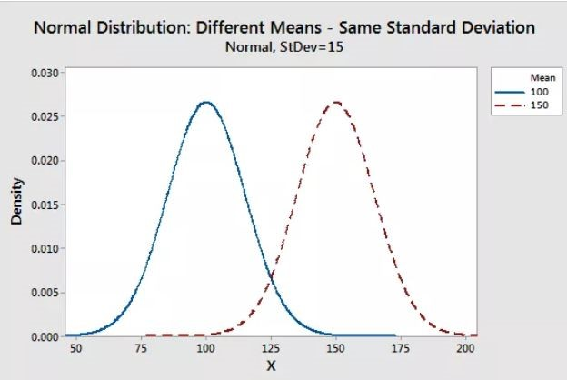

11 Probability distributions
In statistics, a probability distribution gives the possibility of each possible outcome of a random experiment or event. It provides a systematic way to understand and quantify the probabilities of different occurrences.
Probability, as a measure of uncertainty, helps us analyze various phenomena. For instance, when rolling a die, the possible outcomes and their likelihoods are described by a probability distribution. Such distributions apply to any random experiment where outcomes are uncertain or unpredictable.
In this chapter, we explore the definition, functions, formulas, and types of probability distributions.
11.1 Probability distribution
In simple terms, a probability distribution is a way to represent all possible outcomes of a random variable, along with their corresponding probabilities. To understand this better, let us consider a random experiment—tossing an unbiased coin three times. Let \(X\) represent the number of heads that appear in these tosses. The possible outcomes for \(X\) are 0 heads, 1 head, 2 heads, and 3 heads, forming the sample space \(X = \{0, 1, 2, 3\}\). However, these outcomes are not equally likely. The total number of possible outcomes when tossing the coin three times is 8, as shown in Table 11.1.
| On tossing thrice | No: of heads (\(X\)) |
|---|---|
| HHH | 3 |
| HHT | 2 |
| HTH | 2 |
| THH | 2 |
| HTT | 1 |
| THT | 1 |
| TTH | 1 |
| TTT | 0 |
\(P(X = x)\) = \(\frac{No: \ of \ times\ X\ takes\ value\ x}{8}\)
\(P(X = 3)\) = 1/8; \(P(X = 2)\) = 3/8; \(P(X = 1)\) = 3/8; \(P(X = 0)\) = 1/8
Table 11.2 below shows the probability distribution of the number of heads that appear on tossing a coin 3 times.
| \(X\) | \(P(x)\) |
|---|---|
| 0 | 1/8 |
| 1 | 3/8 |
| 2 | 3/8 |
| 3 | 1/8 |
This is an example of discrete probability distribution as \(X\) takes only discrete values. If \(X\) takes continuous values, it is termed as continuous probability distribution.
11.2 Expected value of a random variable
Expected value is exactly what you might think it means: the return you can expect for some kind of action. The expected value of a random variable is the long-run average value of repetitions of the same experiment it represents. For example, the expected value in rolling a six-sided die is 3.5, because each face (1 through 6) has an equal chance of 1/6, and when you multiply each number by its probability and sum them up like 1/6 + 2/6 + 3/6 + 4/6 + 5/6 + 6/6, then you get 21/6, which is 3.5. It’s the average you’d see over countless rolls, even though you can’t roll a 3.5! The expected value of a random variable \(X\) is denoted as \(E(X)\).
The formula for calculating the Expected Value of random variable where there are multiple probabilities is given for discrete and continuous in Equation 11.1 and Equation 11.2.
Discrete case {.underline}
\[E(X) = \sum_{i = 1}^{\infty}xP(x) \tag{11.1}\]
Continuous case {.underline}
\[E(X) = \int_{- \infty}^{\infty}{x P(x)\ \text{dx }};- \infty \leq x \leq \infty \tag{11.2}\]
here the random variable \(X\) lies between \({-\infty}\) and \({+\infty}\)
Example 11.1: Find Expected value of \(X\) of tossing a single unfair die
| x | 1.0 | 2.0 | 3.0 | 4.0 | 5.0 | 6.0 |
| p(x) | 0.1 | 0.1 | 0.1 | 0.1 | 0.1 | 0.5 |
Solution 11.1:
| xp(x) | 0.1 | 0.2 | 0.3 | 0.4 | 0.5 | 3 |
Using equation Equation 11.1, \(E(X)\) = \(\sum_{i = 1}^{6}xP(x)\) = 0.1+0.2+0.3+0.4+0.5+3 = 4.5
Example 11.2: Find E(X) in the following case (solve it yourself)
| \(x\) | \(P(x)\) |
|---|---|
| 0 | 1/8 |
| 1 | 3/8 |
| 2 | 3/8 |
| 3 | 1/8 |
11.3 Discrete probability distributions
A discrete probability distribution represents the probabilities of outcomes of a discrete random variable, which takes on a countable number of distinct values. For example, the number of heads when flipping a coin three times or the number of defective items in a batch are described by discrete distributions. Each possible outcome is assigned a specific probability, and the sum of these probabilities is always 1.
We have seen that a probability distribution lists all possible outcomes of a random variable along with their corresponding probabilities, often represented as a table. However, it is often more convenient to express the distribution as an equation. With such an equation, the probability corresponding to any given value of \(x\) can be calculated directly. Depending on the situation, various discrete probability distributions are used to model different scenarios. In this chapter, we will focus on the following discrete distributions.
Bernoulli distribution
Binomial distribution
Poisson distribution
Probability mass function
When a probability function is used to describe a discrete probability distribution, it is referred to as a probability mass function (commonly abbreviated as p.m.f). A probability mass function assigns a probability to each specific outcome of a discrete random variable. It is expressed as: \(P(x) = P(X = x)\). Here, \(X\) is the discrete random variable, and \(P(x)\) represents the probability of \(X\) taking the specific value \(x\). The function ensures that all probabilities are non-negative and sum to 1 across all possible outcomes of \(X\).
Properties of p.m.f
The probability of each outcome is always non-negative. For a discrete random variable \(X\) and its p.m.f, \(P(x) \geq 0 \quad \text{for all } x\)
The sum of the probabilities over all possible values of the random variable equals 1. That is:\(\sum_{x \in S} P(x) = 1\). where \(S\) is the sample space of (\(X\)), representing all possible values.
The p.m.f gives the exact probability for each specific value of the discrete random variable. For a value \(x:P(X = x) = P(x)\)
If a value \(x\) is not in the sample space \(S\), its probability is zero: \(P(x) = 0 \quad \text{for } x \notin S\)
The p.m.f is defined only for the discrete values in the sample space of the random variable \(X\). It does not apply to continuous ranges or non-discrete variables.
11.3.1 Bernoulli distribution
A Bernoulli distribution is a discrete probability distribution that applies to a random experiment with exactly two possible outcomes, commonly referred to as “success” and “failure.” For example, tossing a coin results in two outcomes, which the experimenter can label as success and failure based on their context. Success might be defined as getting a head and failure as getting a tail. The definition of success and failure is flexible and can be tailored by the experimenter to suit the specific scenario under study.
The probability mass function of the distribution is
\[P(X = x) = p^x (1 - p)^{1 - x} \tag{11.3}\]
in ?eq-benoulli \(X\) takes only two values = 0,1. Where \(p\) is the probability of success and \(1-p\) is the probability of failure.
Note
A parameter of a distribution is a fixed value that describes a key characteristic of the distribution. The parameter of a Bernoulli distribution is \(p\), which represents the probability of success in a single trial
The expected value for a random variable, \(X\), from a Bernoulli distribution is: E(\(X\)) = \(p\) and the variance of a Bernoulli random variable is: var(\(X\)) = \(p(1 - p)\).
Example 11.3: Find the probability assuming Bernoulli distribution of a biased coin where probability of success (getting head) \(p\) = 0.4
Let \(X\) be the random variable which takes value 0 on getting tail (failure) and takes value 1 on getting head (success). So using the equation ?eq-benoulli
\(P(X = 0) = (0.4)^0 (1-0.4)^1 = 0.6\)
\(P(X = 1) = (0.4)^1 (1-0.4)^0 =0.4\)
the distribution can be shown as below:
| \(x\) | \(P(x)\) |
|---|---|
| 0 | 0.6 |
| 1 | 0.4 |
Note
A Bernoulli trial is one of the simplest experiments you can conduct in probability and statistics. It’s an experiment where you can have one of two possible outcomes. For example, “Yes” and “No” or “Heads” and “Tails.”
11.3.2 Binomial distribution
Binomial distribution can be thought of as simply the probability of a success or failure outcome in an experiment or survey that is repeated multiple times; i.e. a Binomial distribution happens, when a Bernoulli trial is repeated \(n\) number of times. The binomial is a type of distribution that has two possible outcomes (the prefix “bi” means two, or twice). For example, if you toss a coin 5 times and count the number of heads, that count, \(X\), follows a binomial distribution with \(n = 5\). In short, a single coin toss is a Bernoulli trial, but repeating it several times (more than once) turns it into a binomial experiment that can be used to predict outcomes.
Binomial distributions must also meet the following three criteria:
The number of observations or trials is fixed. (\(n\))
Each observation or trial is independent
The probability of success (tails, heads, fail or pass) is exactly the same from one trial to another (\(p\))
The probability mass function of the distribution is
\[P(x) = \binom{n}{x} p^x q^{n-x} = \frac{n!}{x!(n-x)!} p^x q^{n-x} \tag{11.4}\]
where x takes values = 0,1,2,…, \(n\)
\(n\)= number of trials
\(x\)= number of success desired
\(p\)= probability of getting a success in one trial
\(q\) = \(1-p\) = probability of getting a failure in one trial
E(\(X\)) = \(np\)
V(\(X\)) = \(npq\); \(n\) and \(p\) are the most important parameters in binomial distribution.
Mean of binomial distribution is \(np\) and variance is \(npq\)
Example
A coin is tossed 10 times. What is the probability of getting exactly 6 heads?
here,
\(n\) = 10
\(x\) = 6
\(p\) = ½
\(q\) = \(1-p\) = ½
We have to find \(p(X=6)\); using the formula \(p(X=x)\) \(=\) nCx \(p^x\) \(q^{n-x}\)
\(p(X=6)\) = 10$c$6 \(\left( \frac{1}{2} \right)^{6}\left( \frac{1}{2} \right)^{10 - 6}\)= 0.2050
11.3.3 Poisson distribution
Discovered by the French Mathematician Simeon Denis Poisson (1781 -1840). It is developed to describe the number of times a gambler would win a rarely won game of chance in a large number of tries, i.e. Poisson distribution deals with rare events.
Poisson distribution is first applied to study the number of death by horse kicking in the Prussian army.
Other applications and examples where Poisson distribution is used
Pest incidence
Birth defects and genetic mutations
Rare diseases
Car accidents
Traffic flow and ideal gap distance
Number of typing errors on a page
Hairs found in McDonald’s hamburgers
Spread of an endangered animal in Africa
Failure of a machine in one month
A random variable \(X\) is said to follow a Poisson distribution; if it assumes non-negative values and its probability mass function is given by:
\[p\left( X = x \right) = \frac{e^{- \lambda}.\lambda^{x}}{x!}\]
where \(x\) = 0,1,2,… ., ∞,
\(e\) = 2.7183.
\(λ\) : Average number of successes occurring in a given time interval or region in the Poisson distribution
It is a discrete distribution with a single parameter λ
The mean and the variance of the Poisson distribution are both equal to \(λ\)
Example
The average number of homes sold by a Realty company is 2 homes per day. Assuming Poisson distribution what is the probability that exactly 3 homes will be sold tomorrow?
Solution:
\(λ\) = 2; since 2 homes are sold per day, on average.
\(x\) = 3; since we want to find the probability that 3 homes will be sold tomorrow.
\(e\) = 2.71828; since e is a constant equal to approximately 2.71828.
\[p\left( X = x \right) = \frac{e^{- \lambda}.\lambda^{x}}{x!}\]
\(p(X=3)\) = \(\ \frac{{2.71828}^{- 2}{\ \times \ 2}^{3}}{3!}\)
\(p(X = 3)\) = 0.180
Questions
If the random variable X follows a Poisson distribution with mean 3.4, find \(p(X = 6)\)
The number of industrial injuries per working week in a particular factory is known to follow a Poisson distribution with mean 0.5. Find the probability that in a particular week there will be:
\(i)\) Less than 2 accidents \[Hint: p(X<2) = p(X = 0) + p(X = 1)\]
\(ii)\) More than 2 accidents \[Hint: p(X>2) = 1-{p(X = 0) + p(X = 1) + p(X =2)}\]
- A company known on the past experience that 3% of the bulbs they produced are defective. Assuming Poisson distribution find the probability of getting the following in a sample of 100 bulbs: \[Hint: here \ λ = n × p = 100 × 0.03\]
No defective \[ \text{Hint: let } X \text{ be the number of defectives; } x = 0 \]
1 defective \[Hint: x = 1\]
2 defectives \[Hint: x = 2\]
3 defectives\[Hint: x = 3\]
Distributions Bernoulli, Binomial and Poisson that we discussed so far are discrete distributions.
11.4 Continuous probability distributions
If the random variable X is continuous, the corresponding probability distribution is termed as continuous probability distribution. There are several continuous distributions. Our discussion is limited to only Normal distribution.
11.4.1 Normal distribution
The normal distribution is defined by the following probability density function (probability density function is explained in above section)
\[f\left( x \right) = \frac{1}{\sqrt{2\pi\sigma}}e^{- \frac{{(x - \mu)}^{2}}{2\sigma^{2}}}\]
, where \(- \infty < x < + \infty\) ; \(μ\) is the population mean and $σ$2 is the variance, e = 2.718.
If a random variable \(X\) follows the normal distribution, then we write:
\(X\)~\(N\)(\(μ\), $σ$2)
In particular, the normal distribution with \(μ\) = 0 and $σ$2 = 1 is called the standard normal distribution, and is denoted as \(X\)~\(N\)(0,1).
Properties of Normal distribution
The normal distribution is the most frequently used among all probability laws. The normal distribution can be found in many practical problems.
If you plot density \(f(x)\) against \(x\) the graph will be bell shaped always
Many things closely follow a Normal Distribution:
yield of crops
heights of people
size of things produced by machines
errors in measurements
blood pressure
marks on a test
The Normal Distribution has:
mean = median = mode
Mean is located to the centre of the curve. mean = median = mode, all these locate towards the centre

Normal distribution is symmetric about the centre, 50% of values less than the mean and 50% greater than the mean

Standardisation of Normal distribution
The standard normal distribution is a special case of the normal distribution where the mean is zero and the standard deviation is 1.
This distribution is also known as the Z-distribution. A value on the standard normal distribution is known as a standard score or a Z-score.
A standard score or Z-score represents the number of standard deviations above or below the mean that a specific observation falls.
So to convert a value to a Standard Score (“z-score”):
First subtract the mean,
Then divide by the Standard Deviation
And doing that is called “Standardizing”.

Example: A survey of daily travel time had these results (in minutes):
\(X\): 26, 33, 65, 28, 34, 55, 25, 44, 50, 36, 26, 37, 43, 62, 35, 38, 45, 32, 28, 34
Convert it in to standard scores (Z-score).
The Mean is 38.8 minutes, and the Standard Deviation is 11.4
First subtract the mean from observation
Then divide by the Standard Deviation
| \(X\) | \(X-\mu\) | \[z = \frac{X - \mu}{\sigma}\] |
|---|---|---|
| 26 | -12.8 | -1.12 |
| 33 | -5.8 | -0.51 |
| 65 | 26.2 | 2.30 |
| 28 | -10.8 | -0.95 |
| 34 | -4.8 | -0.42 |
| 55 | 16.2 | 1.42 |
| 25 | -13.8 | -1.21 |
| 44 | 5.2 | 0.46 |
| 50 | 11.2 | 0.98 |
| 36 | -2.8 | -0.25 |
| 26 | -12.8 | -1.12 |
| 37 | -1.8 | -0.16 |
| 43 | 4.2 | 0.37 |
| 62 | 23.2 | 2.04 |
| 35 | -3.8 | -0.33 |
| 38 | -0.8 | -0.07 |
| 45 | 6.2 | 0.54 |
| 32 | -6.8 | -0.60 |
| 28 | -10.8 | -0.95 |
| 34 | -4.8 | -0.42 |

The z-score formula that we have been using is:
\[z = \frac{x - \mu}{\sigma}\]
z is the “z-score” (Standard Score)
\(x\) is the value to be standardized
\(μ\) (’mu”) is the mean
\(σ\) (“sigma”) is the standard deviation
Parameters of Normal distribution
As with any probability distribution, the parameters of the normal distribution define its shape and probabilities entirely. The normal distribution has two parameters, mean (\(μ\)) and standard deviation (\(σ\)). The normal distribution does not have just one form. Instead, the shape changes based on the parameter values.

Standard deviation:
The standard deviation is a measure of variability. It defines the width of the normal distribution. It determines how far away from the mean the values tend to fall. It represents the typical distance the observations and the average.

When you have normally distributed data, the standard deviation can be used to determine the proportion of the values that fall within a specified number of standard deviations from the mean. For example, in a normal distribution, 68% of the observation falls within +/- 1 standard deviation from the mean. This property is called as Area Property.
Area Property

| mean +/- standard deviation | % of value contained |
|---|---|
| 0.745 | 50 |
| 1 | 68.26 |
| 1.96 | 95 |
| 2 | 95.44 |
| 2.58 | 99 |
| 3 | 99.73 |
In short the properties of Normal distribution
Normal distribution curve is bell shaped
Normal distribution is symmetric about the line x=\(μ\) , not skewed.
The mean, median, and mode are all equal.
Half of the population is less than the mean and half is greater than the mean.
Area property allows you to determine the proportion of values that fall within certain distances from the mean.
The area under the normal curve is always unity.
All odd order moments are zero in normal distribution.
Quartile Deviation. Q.D = \(\frac{2}{3}\sigma\)
Mean Deviation. M.D = \(\frac{4}{5}\sigma\)
Solved example
- What is the z-score of a value of 27, given a set mean of 24, and a standard deviation of 2 ?
Solution
To find the z-score we need to divide the difference between the value, 27, and the mean, 24, by the standard deviation of the set, 2.
\[z = \frac{27 - 24}{2} = \frac{3}{2} = 1.5\]
This indicates that 27 is +1.5 standard deviations above the mean.